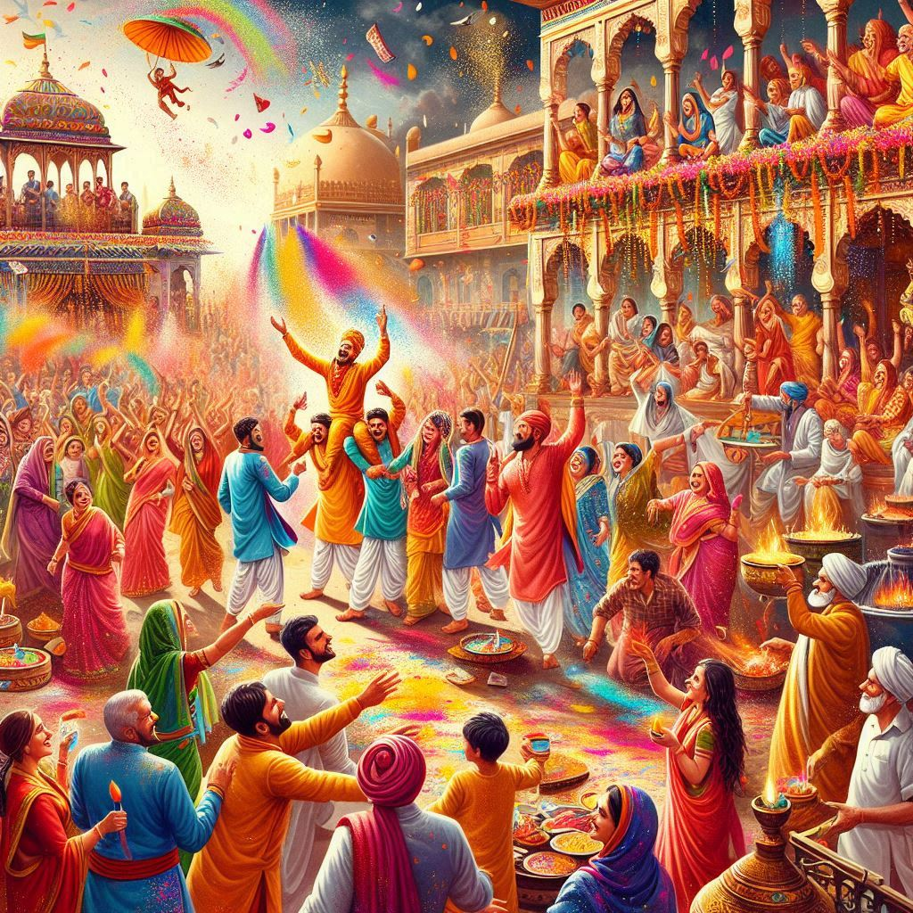
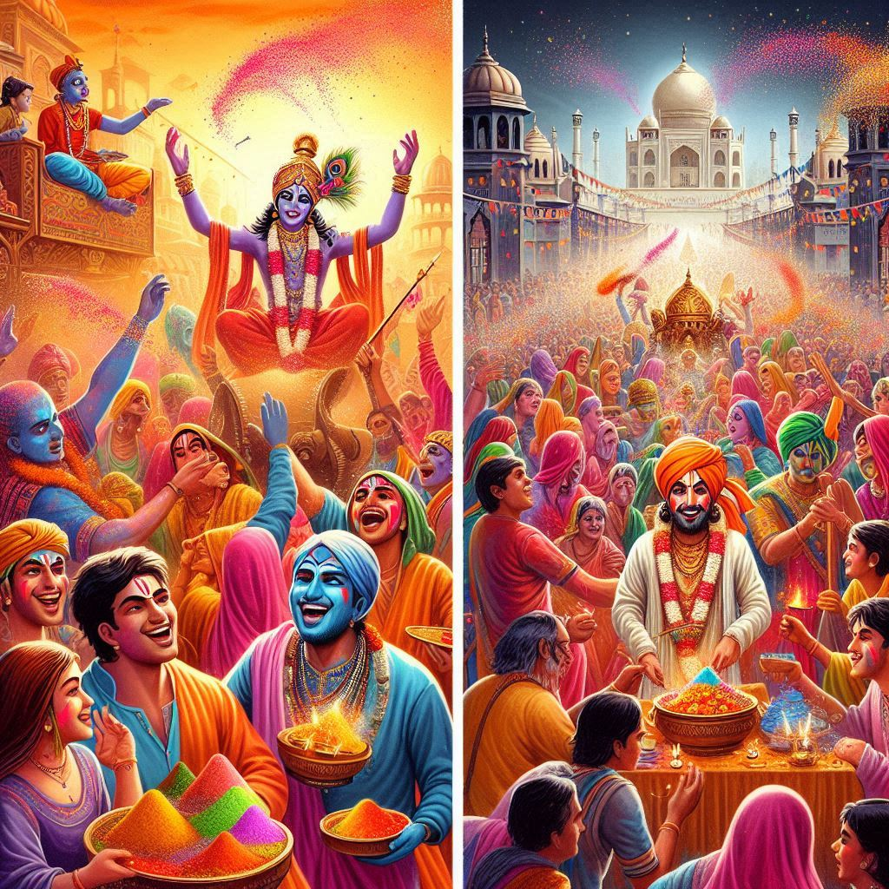

Uttar Pradesh is home to a vibrant array of festivals that reflect its diverse cultural, religious, and historical heritage. Here’s an overview of some of the most significant festivals celebrated in the state:
1. Diwali
- Description: Known as the festival of lights, Diwali is celebrated with great enthusiasm across Uttar Pradesh. It symbolizes the victory of light over darkness and good over evil.
- Celebrations: Homes are decorated with diyas (lamps), rangoli (colorful patterns made from rice or colored powders), and fireworks. Families perform pujas (prayers) and exchange sweets.
2. Holi
- Description: The festival of colors, Holi marks the arrival of spring and is celebrated with joy and enthusiasm.
- Celebrations: People throw colored powders and water at each other, sing songs, and enjoy festive foods. The celebrations often include traditional music and dance.
3. Eid
- Description: Eid is celebrated by the Muslim community in Uttar Pradesh, marking the end of Ramadan.
- Celebrations: The day begins with special prayers at mosques, followed by feasting with family and friends. Sweets and special dishes, such as biryani and kebabs, are prepared.
4. Dussehra
- Description: Celebrated to commemorate the victory of Lord Rama over the demon king Ravana, Dussehra marks the end of the nine-day festival of Navratri.
- Celebrations: Effigies of Ravana are burned, and plays depicting the Ramayana are performed in many towns, especially in Varanasi and Ayodhya.
5. Janmashtami
- Description: This festival celebrates the birth of Lord Krishna and is especially significant in Mathura and Vrindavan.
- Celebrations: Devotees engage in fasting, singing bhajans (devotional songs), and reenacting scenes from Krishna’s life. Temples are decorated, and special prayers are held.
6. Navratri
- Description: A nine-night festival dedicated to the worship of the goddess Durga, Navratri is celebrated with great fervor, particularly in Varanasi and Kanpur.
- Celebrations: Devotees observe fasting, perform garba and dandiya dances, and visit temples. The festival culminates in Dussehra.


7. Baisakhi
- Description: Celebrated primarily by the Sikh community, Baisakhi marks the harvest season and the Punjabi New Year.
- Celebrations: Festivals include folk music, dancing, and community meals (langar) in gurdwaras.
8. Kumbh Mela
- Description: Held every 12 years in Allahabad (Prayagraj), the Kumbh Mela is one of the largest religious gatherings in the world.
- Celebrations: Millions of pilgrims gather for ritual bathing in the Ganges, believed to cleanse sins. The event features spiritual discourses, cultural programs, and various religious activities.
9. Makar Sankranti
- Description: This harvest festival marks the transition of the sun into the zodiac sign of Capricorn (Makar).
- Celebrations: People celebrate with kite flying, feasting on traditional foods like sesame and jaggery sweets, and participating in fairs.
10. Gudi Padwa
- Description: Celebrated by the Marathi community, Gudi Padwa marks the New Year and the arrival of spring.
- Celebrations: Homes are decorated with rangoli, and a gudi (a decorated pole) is placed outside. Families prepare special dishes to mark the occasion.
Conclusion
The festivals of Uttar Pradesh are a colorful celebration of life, showcasing the state's rich cultural diversity and religious traditions. Each festival brings people together in joy and celebration, reflecting the vibrant spirit of the region. Visitors to UP during these festive times can experience the unique customs, rituals, and culinary delights that define its cultural heritage.